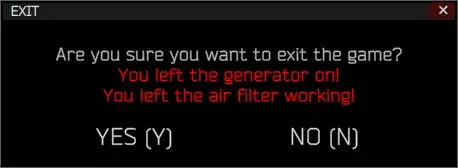

Mod
Air Filter Warning
- Downloads
- 2,373
- Favourites
- 10
- Mod lists
- 15
Air Filter Warning
A simple mod that adds warning message before exiting the game when air filter is still working in your hideout.
SPT 3.10.5 version is available on GitHub

Installation
- Make sure that SPT Client is not running
- Press download button on top of this page or head to releases page on GitHub
- Download correct version for your SPT
- Open zip file
- Drag and drop BepInEx directory to your SPT directory
- Start game and make sure that mod is working
Old Versions
You can download other versions of this mod (3.10.5, 3.11) on GitHub
License
Copyright © 2025 danx91 (aka ZGFueDkx) This software is distributed under GNU GPLv3 license
If you believe that this software infringes yours or someone else’s copyrights, please contact me via Discord to resolve this issue: danx91